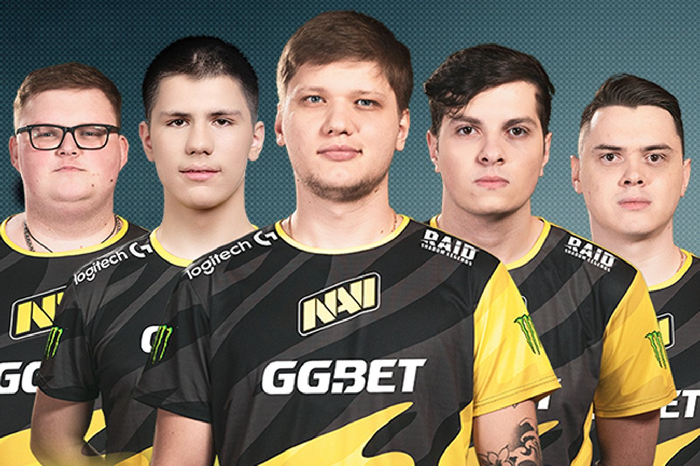

Counter-Strike: Global Offensive, как и её предшественницы Counter-Strike и Counter-Strike: Source, является киберспортивной дисциплиной. Самыми крупными и престижными турнирами считаются турниры серии Major и турниры серии Blast Premier. Major-турниры проводятся при совместной поддержке Valve и компании, которая проводит турнир. Первым таким турниром стал DreamHack Winter 2013, который имел призовой фонд в 250.000 $, а начиная с MLG Columbus 2016, призовой фонд стал составлять 1.000.000 $. На 2019 год было проведено 15 таких турниров. Ещё одним крупным событием является лига Blast Premier, так, на Blast Premier 2020 общий призовой фонд составил 4.250.000 $. В 2021 году прошёл PGL Major Stockholm 2021 с общим призовым фондом 2.000.000 $. Также существует множество других соревнований, например IEM, ESL, Blast Pro Series и др.
В промежутках же между ними по игре постоянно проходят сотни самых разных частных турниров разного уровня, и, учитывая, что организаторы сами готовы их проводить в таком количестве, можно смело сказать, что они окупаются и игра способна жить сама по себе и без издателя. Чего не скажешь о многих других проектах. Самыми крупными сейчас являются серии турниров от BLAST под их же именем и от ESL под именами Intel Extreme Masters и ESL Pro League. Их финальные турниры во многом сравнимы и по призовым, и по престижу с Major турнирами. А иногда в финансовом вопросе и превосходят их.
Турнирная система
В отличии от многих дисциплин, в CS:GO нет жёсткой турнирной системы. Издатель игры в лице компании Valve проводит только два крупных турнира в году, один весной и один осенью, которые называются Major турнирами и на которых разыгрывают 1 миллион долларов. Да и вообще сами турниры проводят не они сами, а отдают каждый раз новому стороннему подрядчику. Отборы на Major’ы проходят в трёх регионах и сейчас из 24 мест на турнире 16 идёт Европейцам, 6 Американцам и 2 Азиатам.
Исторические чемпионы и легенды
Поскольку киберспорт в Counter Strike существует уже лет двадцать, то и легенд тут накопилось много, так что давайте скажу пару слов об основных вехах в истории именно CS:GO и доминировавших в своё время командах. С выходом новой игры в 2013 году самыми сильными командами стали два шведских гиганта Fnatic и Ninjas in Pijamas. Изначально более сильными считались NIP с F0rest, Friberg, GeT_RiGhT, Fifflaren и Xizt. Они были просто непобедимыми и уничтожали всех. Но потом появилась другая шведская команда Fnatic с Flusha, JW, Pronax, Olofmeister и Krimz и гдк-то до 2015 года были сильнейшей командой мира.
Самые сильные команды сейчас
Сейчас же сцена в КС находится в некоем переходном периоде. Казалось, что в прошлом году надолго на трон взошли наши парни из NaVi с s1mple, Electronic, Boombl4, Perfecto и B1t, но геополитика внесла своё и команда начала сыпаться, хоть до сих пор и осталась в топе лучше сделав замену Boombl4 на Somedieyoung из-за неспортивных причин.
Лучшей командой сейчас является Европейский микс FaZe Clan с Karrigan, Rain, Twistzz, Ropz и Broky. Но они не такие доминирующие топ-1, как были многие другие коллективы.
Сильны сейчас и наши парни из Cloud9, игравшие до этого за Gambit и Европейцы из Ence. Если говорить о регионах, то тут сейчас всё очень однобоко. Абсолютно лучшим является Европейский регион. В нём сильны как СНГ и так Западноевропейские команды. В Северной Америке есть неплохие команды, но они не так и сильны. Немного лучше показывают себя Южноамериканцы из Бразилии, но и они не очень стабильны. Ну и самым слабым регионов является Азия, которую приглашают на турниры скорее из уважения. Они никогда даже близко не были хотя бы к 10-ке сильнейших.

Положение в СНГ
В СНГ CS:GO является одной из двух главных киберспортивных дисциплин и естественно к ней приковано внимание почти всех фанатов киберспорта и почти всех организаций. Ну и по силе наш регион является одним из сильнейших. У нас есть и сверхмощные NaVi и Cloud9, о которых я уже говорил. И достаточно сильные Team Spirit и Virtus. Pro (сейчас Outsiders)